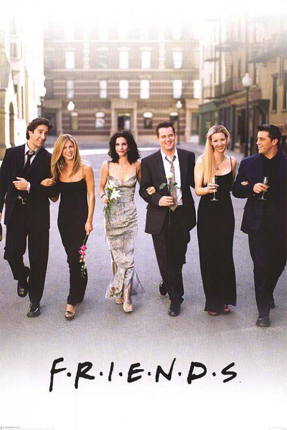
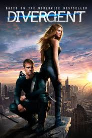
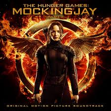
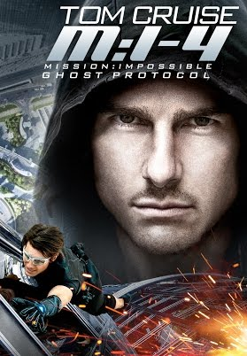

| 
FRIENDS Realize date: September 22, 1994 Friends (stylized as F•R•I•E•N•D•S) is an American television sitcom, created by David Crane and Marta Kauffman, which aired on NBC. Cast: | 
DIVERGENT Realize date: March 21, 2014 The film received mixed reviews from critics, with praise going towards its concepts and action, and criticism focused on its execution. Cast: |
| 
HUNGER GAMES Realize date: 2008, 2009, 2010 The Hunger Games is a trilogy of young adult dystopian novels written by American novelist Suzanne Collins. The series is set in The Hunger Games universe, and follows young characters Katniss Everdeen and Peeta Mellark. The novels in the trilogy are titled The Hunger Games (2008), Catching Fire (2009), and Mockingjay (2010).The novels have all been developed into films starring Jennifer Lawrence, with the film adaptation of Mockingjay split into two parts. Cast: | 
MISSION IMPOSSIBLE Realize date: November 23, 1996 Impossible is a series of action spy thriller films based on the television series of the same name, The series is the 20th-highest-grossing film series of all time, with a worldwide gross of over $2 billion to date. A sixth film is currently filming, set to be released in 2018.produced by and starring Tom Cruise as Impossible Missions Force (IMF) agent Ethan Hunt. Cast: |